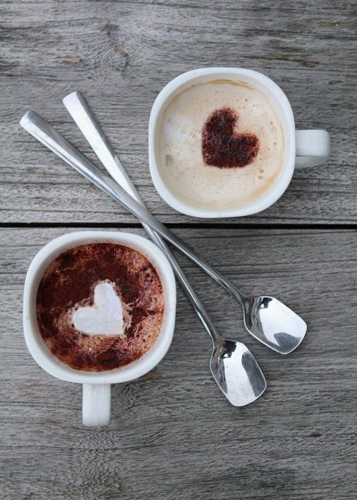
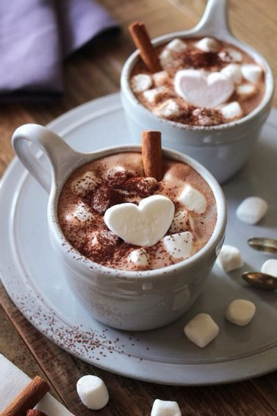

|  | Servir deliciosas bebidas personalizadas es lo que nos distingue, pues buscamos ser siempre tu mejor opción. Hoy en día, los clientes son conocedores del café y muchos llegan a hacer hasta lo imposible para encontrar el café perfecto. El siempre Café es la opción ideal de un restaurante con deliciosas recetas de café con o sin leche. |
|
Ofrecemos tazas de café cuidando cada detalle. Tenemos para ustedes. Espressos, capuccinos, lattes, sorbetos, y americanos. Para acompañar el café ofrecemos pastelería y repostería. |  |